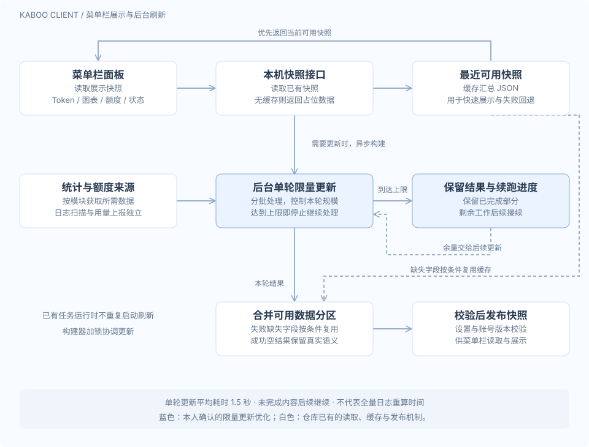

Kaboo
CONTRIBUTOR / RELIABILITY优化客户端菜单栏快照更新：先展示可用数据，再以受控工作量推进后台刷新。
我的职责 · 项目贡献者 · 客户端菜单栏快照稳定性优化
菜单栏快照读取与限量刷新
蓝色：限量更新优化白色：系统已有机制
背景与问题
Kaboo 客户端菜单栏通过本机服务获取一份展示快照，汇总 Token、统计图表、额度与运行状态。我的优化针对这一快照的更新过程：当单轮承担过多处理工作时，刷新容易超时，影响面板更新的稳定性。因此需要限制一次更新的工作量，同时让未完成部分能够继续推进。
技术决策：为每轮更新设置边界
将更新改为分批限量处理与断点续跑。每轮从此前保留的进度继续，处理本轮允许范围内的数据；达到单轮上限后停止继续处理，保留本轮结果和续跑进度，剩余内容留到后续更新。这样将完整更新拆成多轮推进，单轮可以及时结束，尚未处理的数据也有明确的后续处理路径。
结果与作用
优化后，客户端菜单栏单次快照更新平均耗时为 1.5 秒。限量处理控制了单次更新的规模，续跑机制使未完成部分能够逐轮补齐。这项贡献聚焦快照更新的稳定性；Kaboo 平台整体覆盖 1 万+ 内部用户，为优化提供了实际使用场景。
放到客户端链路中看
系统已有机制与个人优化
- 01 / 先展示缓存，再异步刷新
- 普通快照读取请求优先返回当前可用缓存；需要更新时再触发后台构建。没有缓存时先返回占位快照。日志扫描与用量上报是独立流程，打开菜单栏不等于重新扫描全部日志。
- 02 / 个人优化：单轮限量与续跑
- 为一次更新设置处理上限，达到上限即停止本轮继续处理，保留结果和进度，未完成内容留给后续更新。把可能过重的一次工作拆成多轮，控制单轮响应时间。
- 03 / 避免重复刷新与过期结果写回
- 已有刷新任务运行时，客户端不会再启动同一轮后台刷新；构建器通过锁协调更新。发布时校验设置版本与账号认证版本，避免异步任务在切换设置或账号后写回过期结果。
- 04 / 按字段保留可用数据
- 构建器合并统计、热力图与额度等分区。请求失败且字段缺失时，在缓存身份、时效和设置允许的范围内复用旧值；成功返回的空结果仍然有效，不能用旧数据覆盖真实的零值或空值。
两类缓存各司其职：本地用量缓存保存按时间桶聚合的使用数据；最近可用快照保存面板需要的汇总 JSON。上报完成与快照刷新分别进行，因此刷新状态和各数据分区的时效需要分别判断。
指标口径：1.5 秒为本人提供的客户端菜单栏单轮快照更新平均耗时；1 万+ 为平台整体用户规模。